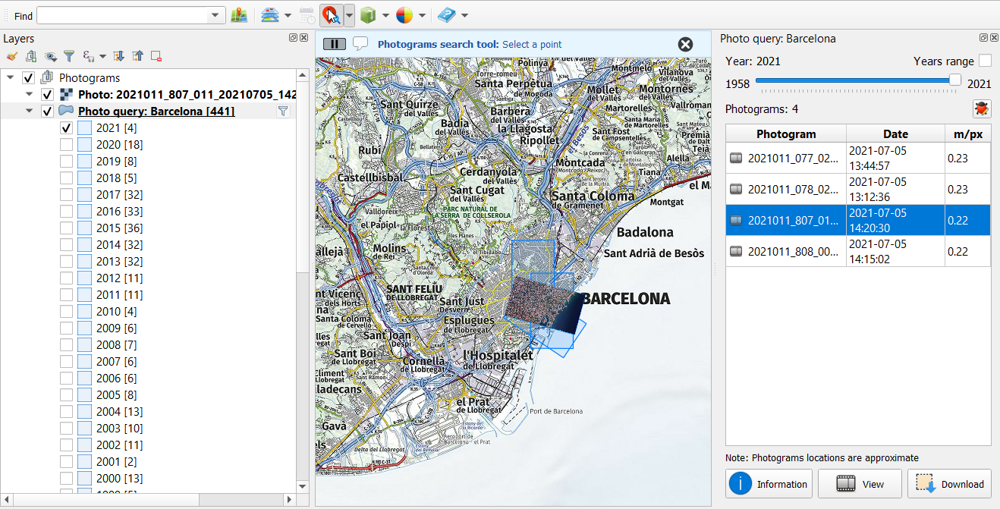

Un plugin QGIS per accedir a dades obertes publicades per l'ICGC (Institut Cartogràfic de Catalunya).
Permet realitzar cerques de topònims, carrers, carreteres i coordenades en diferents sistemes de referència:
carregar capes base d'informació:

gestionar sèries temporals:

cerca de fotogrames històrics ràster:

descarregar informació vectorial o ràster per àrea, municipi o comarca (depenent del producte):

fer una gestió bàsica de l'estil de visualització:

i mostrar ajuda:

S'afegiran més dades i serveis properament.
Aquest plugin utilitza les llibreries suds-py3, wsse i els geoserveis del cadastre